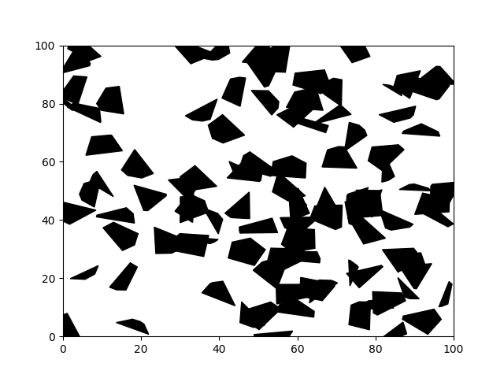

Environment¶
Static Environment¶
The environment with static polygonal obstacles
-
class
environment.StaticEnvironment(dimensions, nb_obstacles)[source]¶ Class implementing a very simple bounded 2D world, containing polygonal obstacles stored in an appropriate data structure for rapid access to close obstacles, even with a large amount of them.
Attributes: - dimensions : tuple
(dim_x, dim_y) The x and y dimension of the rectangular world.
- obstacles : list
List of obstacles, instances of the obstacle class.
- kdtree : KDTree
The binary search tree used to have a rapid access to the obstacles, even with a large amount of them.
Methods
plot([close])Creates a figure and plots the environement on it. is_free(x, y[, time])Returns False if a point is within an obstacle or outside of the boundaries of the environnement. -
close_obstacles(x, y, nb_obstacles=1)[source]¶ Returns the list of all the obstacles close enough to be considered.
Parameters: - x : float
The x coordinate of the point requested
- y : float
The y coordinate of the point requested
- nb_obstacles : int
The number of obstacles to return, has to be less than the total number of obstacles of the environment.
-
is_free(x, y, time=0)[source]¶ Returns False if a point is within an obstacle or outside of the boundaries of the environnement.
Dynamic Environment¶

The environement where the obstacles can moving
-
class
dynamic_environment.DynamicEnvironment(dimensions, nb_walls, moving=False)[source]¶ Class implementing a simple dynamic bounded 2D world, containing square obstacles placed in an ordered manner in order to always permit passage from the bottom to the top of the space.
Attributes: - dimensions : tuple
(dim_x, dim_y) The x and y dimension of the rectangular world.
- obstacles : list
List of walls, instances of the Wall class.
- moving : bool
If the position of the holes in the walls is variying over time.
- center : list
The coordinates of the center of the current scene.
Methods
plot([time, close])Creates a figure and plots the environement on it. is_free(x, y[, time])Returns False if a point is within an obstacle or outside of the boundaries of the environnement. random_free_space()Returns a randomly selected point in the free space. update(position)Refreshs the active walls as well as the position of the camera. -
is_free(x, y, time=0)[source]¶ Returns False if a point is within an obstacle or outside of the boundaries of the environnement.